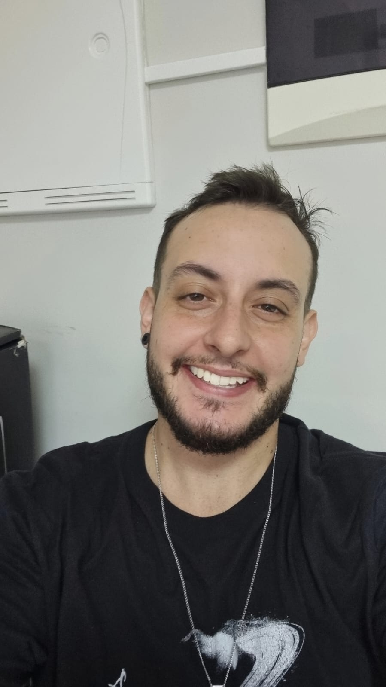

Sobre Mim:

Sou Diego Miranda Fagundes, um entusiasta de tecnologia e focado totalmente em maximizar minhas habilidades, busquei aprimorar meus conhecimentos que contribuíram para o
desenvolvimento de disciplina, comprometimento, capacidade de adaptação a mudanças, excelência na entrega de resultados e trabalho em equipe.
Nasci em São Paulo e desde de muito cedo sabia que gostari de trabalhar com tecnologia, afinal qual criança da quinta série fala para os amiguinhos que quer passar e estudar no ITA?
Bom, os anos foram se passando e mudei-me para o Espírito Santo aos 16 anos e segui um caminho focado em Engenharia Elétrica. Em 2014 passei na UFES e durante minha graduação,
me aprofundei em redes de computadores, contribuindo com artigos científicos e sendo responsável por projetos no datacenter da universidade. No entanto, após abrir e fechar uma
empresa de engenharia focada em instalação e manutenção eletrica, percebi que minha verdadeira paixão era o desenvolvimento. Passei por diferentes empregos nos últimos anos,
mas em 2024, decidi me dedicar completamente ao meu sonho de ser desenvolvedor de software e voltei a estudar, cursando Sistemas de Informação.
Objetivos Profissionais
Meu objetivo agora é construir uma carreira sólida como desenvolvedor de software, aplicando as habilidades que já desenvolvi e aprendendo novas tecnologias para me tornar um profissional de
destaque na área.
Habilidades
Tenho um conjunto diversificado de habilidades que me permitem atuar em diferentes áreas de forma eficiente. Em termos de softskills, sou pró-ativo, resiliente e comunicativo,
o que me ajuda a lidar com desafios e colaborar em equipe. Além disso, minha capacidade de liderança e organização me permite coordenar projetos com eficiência. Sou criativo,
sempre buscando novas soluções para problemas complexos.
Em relação às hardskills, domino ferramentas como Autocad e o Pacote Office, além de ter experiência com CRM. Tenho um forte conhecimento em programação, especialmente em
Python, C, C++ e Shell Script. Também possuo habilidades intermediárias em MATLAB, Verilog, JavaScript, HTML e Kotlin, o que me permite trabalhar em projetos variados,
desde desenvolvimento web até scripts mais complexos em automação e engenharia.
Hobbies
- JOGADOR DE RUGBY
- Uma das maiores paixões da minha vida é o rugby e o Vitória Rugby Club(time que me ensinou e me fez ser a pessoa que sou hoje), jogo à cerca de 11 anos e
ja conquistei muita coisa graças a esse esporte. Fui capitão do time juvenil conquistando diversos titulos estaduais, no ano que fui promovido para o time principal ganhei o titulo
de melhor atleta do ano na minha equipe, o que despertou a atenção de outros times pelo brasil, fui chamado pelo Porto Seguro Rugby para jogar por eles sendo vice campeão baiano e
sendo considerado o melhor half-scrum do campeonato. Infelizmente no final de 2017 sofri uma grave lesão no joelho que me fez abandonar o jogo profissional e tornando apenas um
hobby até hoje.
- JOGADOR DE BOARD E CARD GAMES
- Outra paixão são os jogos, não os eletronicos como todo mundo, mas os jogos de tabuleiros e jogos de cartas como Magic, Pokemon e One Piece, que me
fazem gastar boa parte do meu tempo livre.
Vida Acadêmica
- Fundamental
- Colégio São Domingo Savio
- Colégio Adventista
- Colégio Universitário
- Ensino Médio
- Colégio Gibran
- Centro Educacional Charles Darwin
- Pré-vestibular
- Graduação
- UFES
- Engenharia Elétrica(Incompleto)
- UVV
- Sistemas de Informação(Cursando)
Cursos
- SEBRAE
- Gestão Financeira
- Gestão de Pessoas
- Marketing Empresarial
- Gestão de Empresas(Básico)
- OutBound Sales
- Udemy
- Desenvolvimento Android Completo 2021
- Desenvolvimento de Aplicativo Android usando Kotlin
Disciplinas da Faculdade
Atualmente cursando: Sistemas de Informação na UVV.
Matérias
- Cosntrução de Software para Web
- Matéria focada em desenvolvimento Web, ensinando HTML, CSS e JavaScript.
- Design e Desenvolvimento de Banco de Dados I
- Matéria focada no estudo e desenvolvimento de banco de dados utilizando plataformas como MySQL, Oracle, entre outras.
- Experiência e Interface com o Usuário
- Matéria focada no estudo de performace da Experiêmcia do Usuário (UX design).
- Fundamentos de Tecnologia da Computação
- Matéria com escopo baseado na matéria CS50 de Harvard, focada no estudo do que é computação, o que é programação e como desenvolve-las.
- Lógica para Computadores
- Matéria focada no desenvolvimento de raciocínio lógico e lógica computacional.
- Textos Científicos: Aspectos Metodológicos e Linguísticos
- Matéria focada no ensino de padrões de textos científicos e padrao abnt.